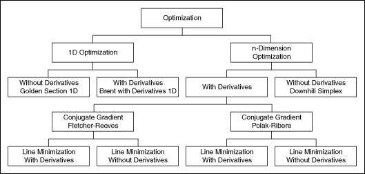

Open example
Open example  Find related examples
Find related examplesOwning Palette: Mathematics VIs
Requires: Full Development System. This topic might not match its corresponding palette in LabVIEW depending on your operating system, licensed product(s), and target.
Use the Optimization VIs to determine local minima and maxima of real 1D or n-dimension functions.
You can choose between optimization algorithms based on derivatives of the function and algorithms working without these derivatives. You also can use special methods like Linear Programming, Levenberg-Marquardt in symbolic form, Pade, and Chebyshev Approximation.
The VIs on this palette can return mathematics error codes.
An overview of the optimization routines is shown in the following illustration.

| Palette Object | Description |
|---|---|
| Brent with Derivatives 1D | Determines a local minimum of a given 1D function in a given interval. The method is based on derivatives of the function. |
| Chebyshev Approximation | Determines a given function using Chebyshev polynomials. |
| Conjugate Gradient nD | Determines a local minimum of a function of n independent variables with the Conjugate Gradient method. |
| Constrained Nonlinear Optimization | Solves a general nonlinear optimization problem with nonlinear equality constraint and nonlinear inequality constraint bounds using a sequential quadratic programming method. |
| Downhill Simplex nD | Determines a local minimum of a function of n independent variables with the Downhill Simplex method. |
| Find All Minima 1D | Determines all local minima of a given function in a given interval. |
| Find All Minima nD | Determines the minima of an n-dimension function in a given n-dimension interval. |
| Global Optimization | Solves a global optimization equation with boundary constraints, nonlinear equality constraints, and nonlinear inequality constraints using the differential evolution (DE) method. |
| Golden Section 1D | Determines a local minimum of a given 1D function with the help of a bracketing of the minimum. The Golden Section Search method is used. |
| Linear Programming Simplex Method | Determines the solution of a linear programming problem. |
| Quadratic Programming | Uses either an interior point algorithm or an active set algorithm to solve the problem: minimize 0.5x*Q*x + c*x, such that A*x=b and Imin are less than or equal to D*x, which is less than or equal to Imax. You must manually select the polymorphic instance to use. |
| Unconstrained Optimization | Solves the unconstrained minimization problem for an arbitrary nonlinear function. You must manually select the polymorphic instance to use. |
Refer to the Transport Optimization Using Linear Programming VI in the labview\examples\Mathematics\Optimization directory for an example of using the Optimization VIs.
Open example Find related examples